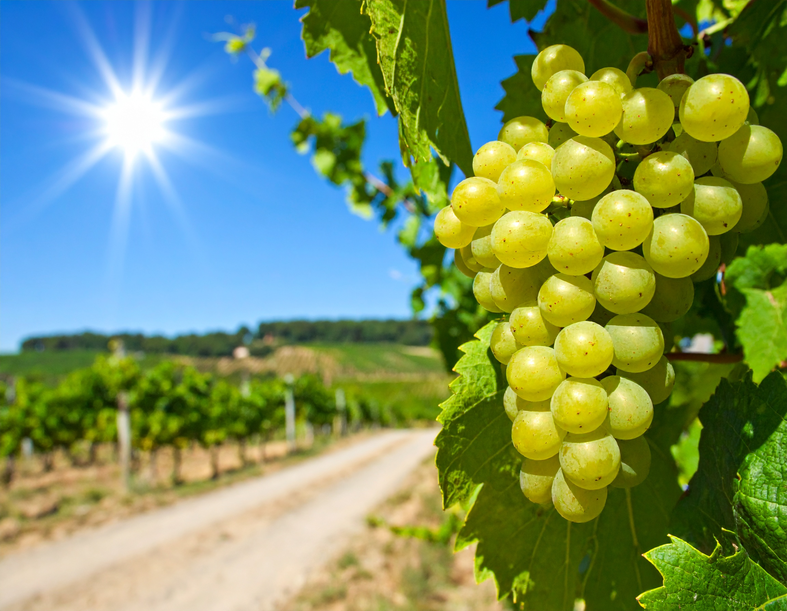

Vores vej

VORES VÆRDIER
Hos Havblink Hvidvin tror vi på, at stor vin starter med stor respekt – for naturen, for håndværket og for fremtiden.
Vi er ambitiøse i vores arbejde med at mindske CO₂-aftrykket og dyrker vores marker med omtanke og innovation.
Vores sydfynske beliggenhed giver os en særlig mulighed: at vise, at dansk vin kan være noget ganske særligt.
Hver vinstok plejes med passion, og hver flaske vin bærer præg af vores kærlighed til det enkle, det ægte og det bæredygtige.

VORES MISSION
Vi skaber hvidvine med respekt for både natur og tradition.
Gennem bæredygtige og innovative dyrkningsmetoder producerer vi vin, der afspejler vores ansvar over for miljøet – og vores stolthed som vinbønder.
Hver flaske er et bevis på, at kvalitet og omtanke går hånd i hånd.
VORES VISION
Vi vil gøre Havblink Hvidvin til et fyrtårn for dansk, økologisk vinproduktion.
Med rødder i det sydfynske og blikket rettet mod horisonten stræber vi efter at skabe hvidvine, der ikke blot lever op til internationale standarder – men som også fortæller historien om det særlige danske terroir.
Vi ønsker at vise, at når klima, håndværk og bæredygtighed forenes, kan dansk vin stå skulder ved skulder med verdens bedste. Samtidig er det vores mål at inspirere til en vinproduktion, hvor omtanke for naturen er lige så vigtig som smagen i glasset.
